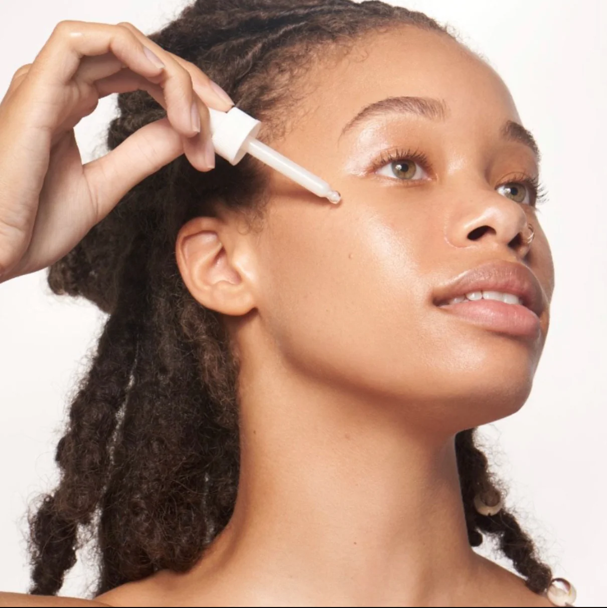
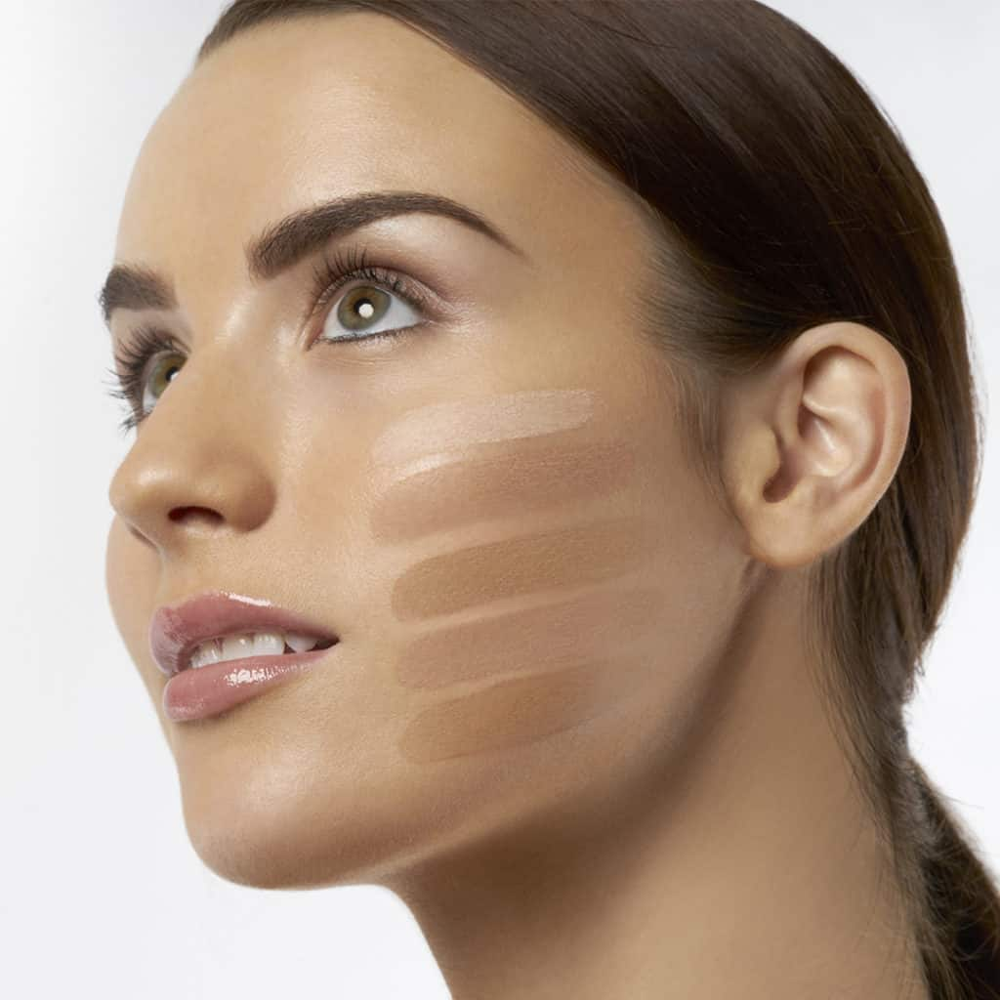
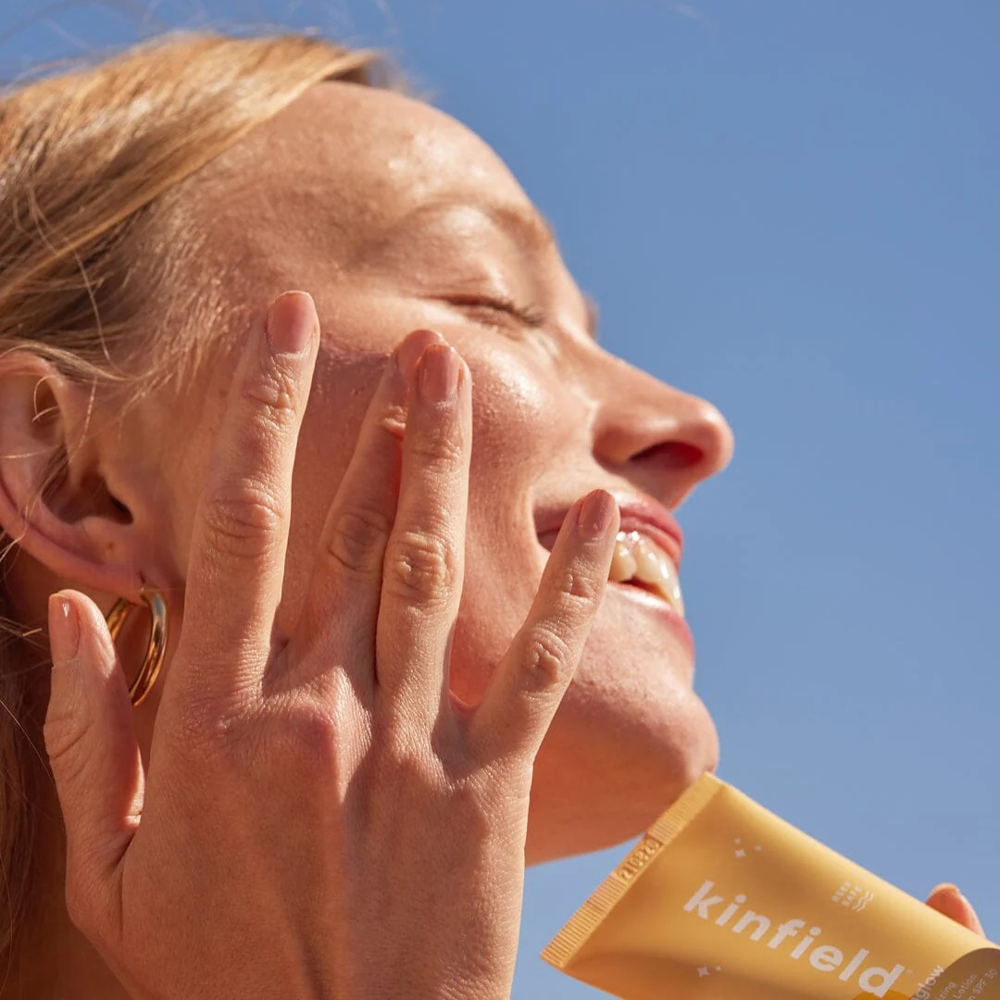
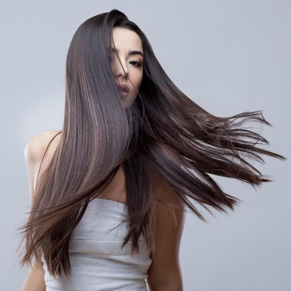

Date of Publication: 2024-11-13
5 Beauty Tips Every Beauty Junkie Should Know
Author: Aya Kharchafi, Student from Vanier College
1. Always Prep Your Skin Before Makeup
Before applying any makeup, ensure your skin is clean and well-hydrated. Cleansing helps remove dirt and excess oils, while moisturizing creates a smooth base for makeup application. Consider using a primer as the final step to minimize pores and keep your makeup lasting longer. For oily skin, use a mattifying primer, while those with dry skin should opt for a hydrating one.
2. Choose the Right Foundation Shade
Picking the perfect foundation shade can make or break your look. Test a few shades on your jawline and observe how they blend with both your neck and face. Opt for natural light to check the match. Remember, your foundation should disappear seamlessly into your skin tone for a flawless finish. It’s also worth adjusting shades seasonally to accommodate for any tanning or fading.
3. Never Skip Sunscreen
Applying sunscreen is one of the best anti-aging and skin-protecting steps you can take. Opt for a broad-spectrum SPF 30 or higher and apply generously every day, even on cloudy days or indoors. This shields your skin from harmful UV rays, reducing the risk of sun damage, premature wrinkles, and hyperpigmentation. Make sunscreen the last step of your skincare routine before makeup.
4. Use a Light Hand with Powder Products

To prevent a cakey look, apply powders, such as blush, bronzer, and setting powders, with a light hand. Dip your brush into the product, tap off any excess, and gently sweep across your face using small, circular motions. Build up layers slowly to achieve your desired intensity, as adding too much product at once can be difficult to blend out.
5. Hydrate for Healthier Hair
Healthy hair begins with hydration. Use a moisturizing shampoo and conditioner, and deep condition your hair weekly to keep it soft and shiny. Consider applying a leave-in conditioner or hair serum on damp hair for added moisture and frizz control. Drink plenty of water daily to nourish your hair from the inside out, ensuring it stays resilient and strong.